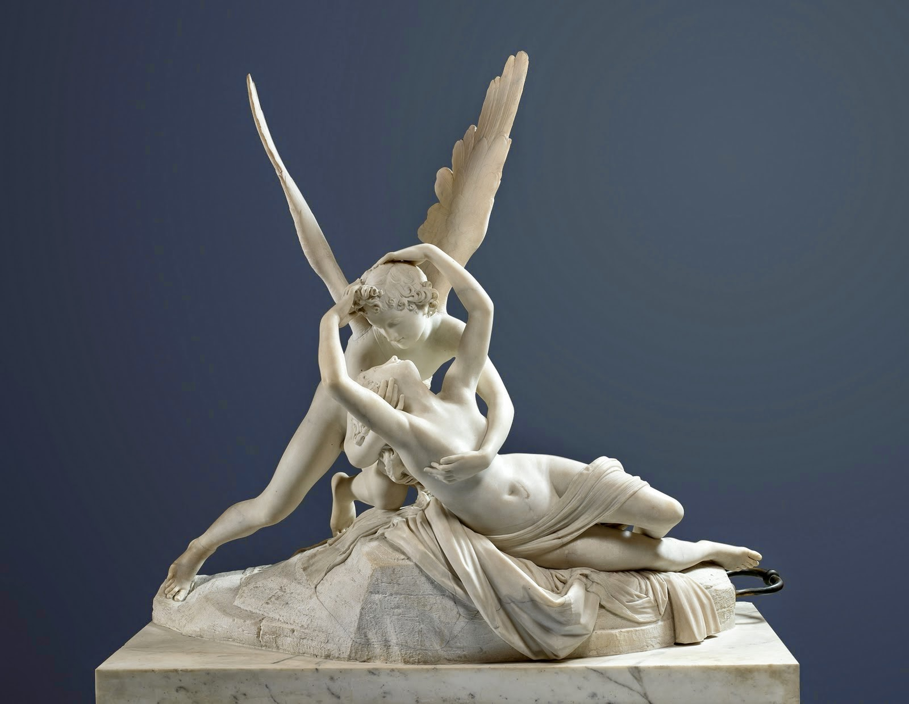
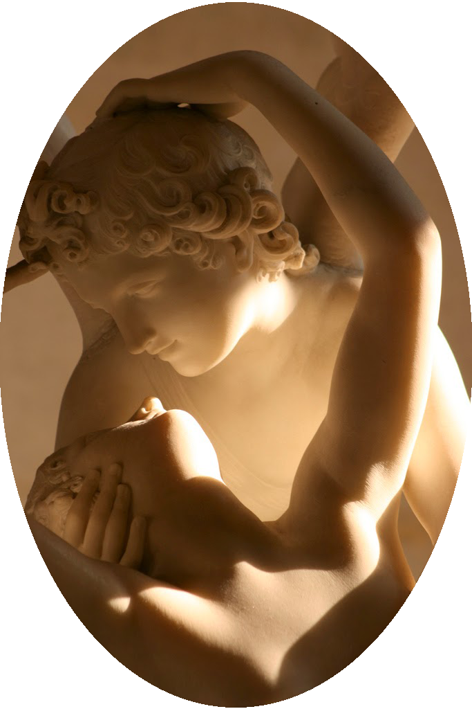

Psique reanimada por el beso del amor
|
|
|  | |
|  |
Ficha técnica
Psique reanimada por el beso del amor, también llamada El amor de Psique o El beso, es un grupo escultórico de mármol blanco realizado a finales del siglo XVIII por el artista italiano Antonio Canova.
|
Relevancia socialLa escultura fue elaborada en 1787, pero no fue terminada hasta 1793 por el considerado mejor escultor neoclásico, Antonio Canova (Possagno, Italia, 1 de noviembre de 1757 - Venecia, 13 de octubre de 1822), por encargo del coronel británico John Campbell (Lord Cawdor) en 1787, aunque acabó siendo adquirida por el marchante y coleccionista holandés Henry Hoppe en 1800, y después acabó en manos del rey de Nápoles y cuñado de Napoleón, Joaquín Murat, que la adquirió para mostrarla en su castillo. |
Contexto históricoEl movimiento estético llamado Neoclasicismo, surge asimilando la tradición barroca en dirección a la naturalidad, la línea de la ilustración y el florecer de una nueva clase social con exigencias crecientes, la burguesía. Todo este contexto da pie a que en el Neoclásico se retomen influencias de la Antigüedad clásica, donde el mundo antiguo es la gran fuente de inspiración de los artistas. Desde la mitad del siglo XVIII en Italia y sobre todo Roma se vuelven el escenario de este movimiento, sin embargo, Francia e Inglaterra tienen también un papel destacado. En el período Neoclásico, la escultura de bulto toma gran importancia, ya que artistas como Antonio Canova, exploran el clasicismo con particularidades que generan en el espectador la sensación de vida dentro de la obra. Canova representa un alto peldaño del Neoclasicismo puesto que su obra se equipara con la Bernini por la estética y Calidad. De sus creaciones "Amore e Psiche" (Psique reanimada por el beso de amor), muestran la continuidad dentro del espacio, la sensación de espontaneidad que forma una situación que queda de forma permanente. La naturalidad del modelo no es rebuscada, por lo que da la apariencia de que más allá de seres mitológicos son seres unidos por un instante. El Neoclasicismo pasó a ser el emblema del Imperio Napoleónico, por su naturaleza de exaltación a las antiguas virtudes romanas como una glorificación política, pese a que de un punto de vista histórico se crea un círculo que implica el reproducir situaciones semejantes un sinnúmero de ocasiones. La extensa obra de este período es bella de apreciar y la escultura hace de la experiencia perceptiva grato momento al dar al observador la posibilidad de interactuar en el espacio y poder tener su propia perspectiva de la obra. |